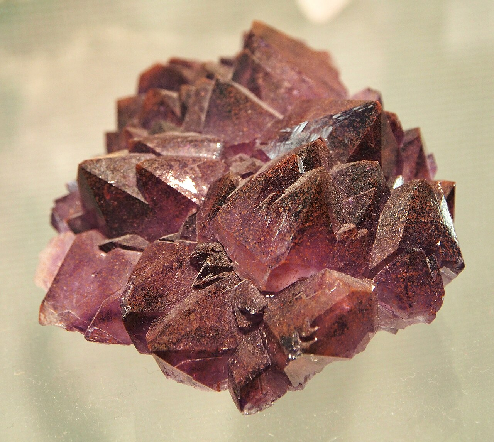

المملكة العربية السعودية — وزارة التعليم
كتاب العلوم — الجزء الأول من المقرر — طبعة ١٤٤٧ / ٢٠٢٥
الصُّخُورُ وَالْمَعَادِنُ
الصف الثاني الابتدائي
إعداد: نايف المطيري
موقع الدرس
أَيْنَ نَحْنُ فِي الْكِتَابِ؟ صفحات ١٣٨ – ١٤٣
الفصل السادس موارد الأرضصفحة ١٣٧
الدرس الأول الصخور والمعادنصفحات ١٣٨ – ١٤٣
سؤال الدرس: كَيْفَ نَسْتَخْدِمُ الصُّخُورَ وَالْمَعَادِنَ؟ (ص ١٤٠)
الأهداف
أَهْدَافُ التَّعَلُّمِ مستخلصة من ص ١٣٨ – ١٤٣
فِي نِهَايَةِ الدَّرْسِ أَكُونُ قَادِرًا عَلَى أَنْ:
أُعَرِّفَ الْمَوَارِدَ الطَّبِيعِيَّةَ. أُعَرِّفَ الصُّخُورَ وَأَصِفَ اخْتِلَافَهَا. أَذْكُرَ أَيْنَ تُوجَدُ الصُّخُورُ. أُبَيِّنَ فِيمَ يَسْتَخْدِمُ النَّاسُ الصُّخُورَ. أُعَرِّفَ الْمَعَادِنَ وَأَذْكُرَ بَعْضَ اسْتِعْمَالَاتِهَا. التهيئة
أَنْظُرُ وَأَتَسَاءَلُ ص ١٣٨ — سؤال الكتاب
لِمَاذَا يَدْرُسُ الْعُلَمَاءُ الصُّخُورَ؟ وَكَيْفَ نَسْتَفِيدُ مِنْهَا؟
معرفة سابقة
مَاذَا أَعْرِفُ مِنْ قَبْلُ؟ تمهيد تربوي
الْغِلَافُ الصَّخْرِيُّ نِسْبَةُ الْيَابِسَةِ عَلَى الْأَرْضِ
الْمَعَادِنُ أَجْزَاءٌ صُلْبَةٌ غَيْرُ حَيَّةٍ مِنَ التُّرْبَةِ
أَشْكَالُ الْيَابِسَةِ جِبَالٌ وَتِلَالٌ وَسُهُولٌ
الْيَوْمَ الصُّخُورُ وَالْمَعَادِنُ
توضيح إضافي: عَرَفْنَا الْمَعَادِنَ فِي دَرْسِ حَاجَاتِ الْمَخْلُوقَاتِ الْحَيَّةِ، وَالْيَوْمَ نَعْرِفُ عَلَاقَتَهَا بِالصُّخُورِ.
المفردات
الْمُفْرَدَاتُ الْعِلْمِيَّةُ ص ١٤٠ — مفردات الكتاب
الْمَوَارِدُ الطَّبِيعِيَّةُ أَشْيَاءُ يَحْصُلُ عَلَيْهَا النَّاسُ مِنَ الْأَرْضِ وَيَسْتَعْمِلُونَهَا.
الصُّخُورُ أَشْيَاءُ غَيْرُ حَيَّةٍ مَوْجُودَةٌ فِي الْأَرْضِ.
الْمَعَادِنُ أَجْزَاءٌ صُلْبَةٌ غَيْرُ حَيَّةٍ تَتَكَوَّنُ مِنْهَا الصُّخُورُ.
الْمُفْرَدَاتُ الثَّلَاثُ كَمَا وَرَدَتْ فِي كِتَابِ الطَّالِبِ، صَفْحَتَا ١٤٠ وَ ١٤٢.
الفكرة الرئيسة
السُّؤَالُ الْأَسَاسِيُّ ص ١٤٠
كَيْفَ نَسْتَخْدِمُ الصُّخُورَ وَالْمَعَادِنَ؟
كِلَاهُمَا مِنْ مَوَارِدِ الْأَرْضِ الَّتِي نَنْتَفِعُ بِهَا.
الشرح
مَا الْمَوَارِدُ الطَّبِيعِيَّةُ؟ ص ١٤٠ — نص الكتاب
هُنَاكَ أَشْيَاءُ يَحْصُلُ عَلَيْهَا النَّاسُ مِنَ الْأَرْضِ وَيَسْتَعْمِلُونَهَا، وَتُسَمَّى الْمَوَارِدَ الطَّبِيعِيَّةَ .
الْمَاءُ
الْهَوَاءُ
النَّبَاتَاتُ
الْحَيَوَانَاتُ
الصُّخُورُ فَالْمَاءُ وَالْهَوَاءُ وَالنَّبَاتَاتُ وَالْحَيَوَانَاتُ وَالصُّخُورُ كُلُّهَا مَوَارِدُ طَبِيعِيَّةٌ.
الشرح
مَا الصُّخُورُ؟ ص ١٤٠ — نص الكتاب
الصُّخُورُ أَشْيَاءُ غَيْرُ حَيَّةٍ مَوْجُودَةٌ فِي الْأَرْضِ.
أَغْلَبُ الصُّخُورِ صُلْبَةٌ. وَيَخْتَلِفُ بَعْضُهَا عَنْ بَعْضٍ فِي:
الشَّكْلِ
الْحَجْمِ
اللَّوْنِ
الْمَلْمَسِ حَقِيقَةٌ (ص ١٤٠): بَعْضُ الصُّخُورِ لَيِّنَةٌ.
محاكاة
أُصَنِّفُ الصُّخُورَ محاكاة لنشاط «أستكشف» ص ١٣٩ ونص ص ١٤٠
حَسَبَ اللَّوْنِ
حَسَبَ الْحَجْمِ
حَسَبَ الشَّكْلِ
أَخْلِطُ مِنْ جَدِيدٍ
أَخْتَارُ طَرِيقَةً لِتَصْنِيفِ الصُّخُورِ.
الشرح
أَيْنَ تُوجَدُ الصُّخُورُ؟ ص ١٤١ — نص الكتاب
تُغَطِّي الصُّخُورُ الْأَرْضَ؛ فَهِيَ مَوْجُودَةٌ:
تَحْتَ الشَّوَارِعِ
تَحْتَ التُّرْبَةِ
وَحَتَّى فِي قَاعِ الْمُحِيطِ محاكاة
أَيْنَ تُوجَدُ الصُّخُورُ؟ محاكاة لنص ص ١٤١
تَحْتَ الشَّوَارِعِ
تَحْتَ التُّرْبَةِ
فِي قَاعِ الْمُحِيطِ
تَحْتَ الشَّوَارِعِ تُوجَدُ الصُّخُورُ. (ص ١٤١)
الشرح
فِيمَ نَسْتَخْدِمُ الصُّخُورَ؟ ص ١٤١ — نص الكتاب
لَقَدِ اسْتُخْدِمَتِ الصُّخُورُ فِي صِنَاعَةِ الْأَدَوَاتِ مُنْذُ آلَافِ السِّنِينَ.
كَمَا أَنَّ الْكَثِيرَ مِنْهَا يُمْكِنُ نَحْتُهُ وَصَقْلُهُ وَطَحْنُهُ .
قَدِيمًا، صَنَعَ النَّاسُ رَأْسَ الْفَأْسِ مِنَ الصَّخْرِ. (ص ١٤١)
آية كريمة
قَالَ تَعَالَى ص ١٤١ — نص الكتاب
وَلَقَدْ حَدَّثَنَا الْقُرْآنُ الْكَرِيمُ عَنْ أَقْوَامٍ نَحَتُوا بُيُوتَهُمْ فِي الْجِبَالِ.
﴿ وَكَانُوا يَنْحِتُونَ مِنَ الْجِبَالِ بُيُوتًا آمِنِينَ ﴾
سُورَةُ الْحِجْرِ — الْآيَةُ ٨٢
ربط مع رؤية ٢٠٣٠
الرَّبْطُ مَعَ رُؤْيَةِ ٢٠٣٠ ص ١٤١ — إطار الكتاب
٢٫٣٫١ الْمُحَافَظَةُ عَلَى تُرَاثِ الْمَمْلَكَةِ الْإِسْلَامِيِّ وَالْعَرَبِيِّ وَالْوَطَنِيِّ وَالتَّعْرِيفُ بِهِ.
مُجْتَمَعٌ حَيَوِيٌّ — رُؤْيَةُ الْمَمْلَكَةِ الْعَرَبِيَّةِ السُّعُودِيَّةِ ٢٠٣٠
تَمَّ نَحْتُ الْجِبَالِ فِي مِنْطَقَةِ الْحِجْرِ قُرْبَ الْعُلَا شَمَالَ غَرْبِ الْمَمْلَكَةِ الْعَرَبِيَّةِ السُّعُودِيَّةِ. (ص ١٤١)
سؤال من الكتاب
أَتَحَقَّقُ ص ١٤١
فِيمَ يَسْتَخْدِمُ النَّاسُ الصُّخُورَ؟
إظهار الإجابة إجابة نموذجية اسْتُخْدِمَتِ الصُّخُورُ فِي صِنَاعَةِ الْأَدَوَاتِ مُنْذُ آلَافِ السِّنِينَ — كَرَأْسِ الْفَأْسِ.نَحْتُهُ وَصَقْلُهُ وَطَحْنُهُ .بُيُوتَهُمْ فِي الْجِبَالِ ، كَمَا فِي مِنْطَقَةِ الْحِجْرِ قُرْبَ الْعُلَا.
الشرح
مَا الْمَعَادِنُ؟ ص ١٤٢ — نص الكتاب
يَحْدُثُ أَحْيَانًا أَنْ نَنْظُرَ إِلَى حَجَرٍ، فَنَرَاهُ يَلْمَعُ .
الْمَعَادِنُ الْمَوْجُودَةُ فِي الصُّخُورِ تَجْعَلُهَا تَلْمَعُ.
الْمَعَادِنُ أَجْزَاءٌ صُلْبَةٌ غَيْرُ حَيَّةٍ تَتَكَوَّنُ مِنْهَا الصُّخُورُ. وَقَدْ تَتَكَوَّنُ الصُّخُورُ مِنْ مَعْدِنٍ أَوْ أَكْثَرَ.
محاكاة
اسْتِعْمَالَاتُ الْمَعَادِنِ محاكاة للوحة «استعمالات المعادن» ص ١٤٢
أَضْغَطُ عَلَى الْمَعْدِنِ:
أقرأ اللوحة
اسْتِعْمَالَاتُ الْمَعَادِنِ ص ١٤٢ — لوحة الكتاب
الْمَعْدِنُ الِاسْتِعْمَالُ الْجَرَافِيتُ قَلَمُ الرَّصَاصِ الْمِجْنَاتَيْتُ الْمِغْنَاطِيسُ الْفُلُورَايْتُ مَعْجُونُ الْأَسْنَانِ التُّرْكُوَازُ الْحِلْيَةُ (الْمُجَوْهَرَاتُ)
سؤال من الكتاب
أَقْرَأُ اللَّوْحَةَ ص ١٤٢
مَا الْمَعْدِنُ الَّذِي يُسْتَخْدَمُ فِي صُنْعِ أَقْلَامِ الرَّصَاصِ؟
إظهار الإجابة إجابة نموذجية هُوَ الْجَرَافِيتُ .
الشرح
كَيْفَ نَحْصُلُ عَلَى الْمَعَادِنِ؟ ص ١٤٣ — نص الكتاب
تَكَوَّنَتِ الصُّخُورُ وَالْمَعَادِنُ فِي الْأَرْضِ خِلَالَ مَلَايِينِ السِّنِينَ .
وَلِكَيْ يَعْثُرَ النَّاسُ عَلَى الْمَعَادِنِ فَإِنَّهُمْ يَحْفِرُونَ فِي الْأَرْضِ ؛ بَحْثًا عَنْهَا.
سؤال من الكتاب
أَتَحَقَّقُ ص ١٤٣
كَيْفَ تَخْتَلِفُ الصُّخُورُ عَنِ الْمَعَادِنِ؟
إظهار الإجابة إجابة نموذجية الصُّخُورُ أَشْيَاءُ غَيْرُ حَيَّةٍ مَوْجُودَةٌ فِي الْأَرْضِ، وَأَغْلَبُهَا صُلْبَةٌ.الْمَعَادِنُ أَجْزَاءٌ صُلْبَةٌ غَيْرُ حَيَّةٍ تَتَكَوَّنُ مِنْهَا الصُّخُورُ ؛ فَقَدْ تَتَكَوَّنُ الصَّخْرَةُ مِنْ مَعْدِنٍ وَاحِدٍ أَوْ أَكْثَرَ. وَهِيَ الَّتِي تَجْعَلُ الصَّخْرَةَ تَلْمَعُ.
نشاط
نَشَاطُ الْكِتَابِ ص ١٤٣ — نشاط الكتاب
أُلَاحِظُ بَعْضَ الْمَعَادِنِ بِاسْتِخْدَامِ عَدَسَةٍ مُكَبِّرَةٍ، وَأُلَاحِظُ مَا يَجْعَلُ كُلًّا مِنْهَا مُخْتَلِفًا عَنِ الْآخَرِ.
اللَّوْنُ
اللَّمَعَانُ
الْمَلْمَسُ
الشَّكْلُ نشاط استقصائي
أَسْتَكْشِفُ — الْأَدَوَاتُ ص ١٣٩ — نشاط الكتاب
سؤال النشاط: كَيْفَ نُصَنِّفُ الصُّخُورَ؟
أَحْتَاجُ إِلَى:
صُخُورٍ صَغِيرَةٍ
عَدَسَةٍ مُكَبِّرَةٍ السلامة
قَبْلَ أَنْ نَبْدَأَ النَّشَاطَ تعليمات السلامة — ص ٧
أَغْسِلُ يَدَيَّ جَيِّدًا قَبْلَ النَّشَاطِ وَبَعْدَهُ. لَا أَضَعُ الصُّخُورَ فِي فَمِي، وَلَا أَرْمِيهَا. أَنْتَبِهُ لِلْحَوَافِّ الْحَادَّةِ فِي بَعْضِ الصُّخُورِ. لَا أُوَجِّهُ الْعَدَسَةَ الْمُكَبِّرَةَ نَحْوَ الشَّمْسِ. نشاط استقصائي
أَسْتَكْشِفُ — الْخُطُوَاتُ ص ١٣٩ — الخطوات ١ – ٣
أُلَاحِظُ. أَنْظُرُ إِلَى قِطَعِ الصُّخُورِ بِالْعَدَسَةِ الْمُكَبِّرَةِ. أَصِفُ مَا أَرَاهُ. فِيمَ تَتَشَابَهُ الصُّخُورُ، وَفِيمَ تَخْتَلِفُ؟أُصَنِّفُ. أَضَعُ الصُّخُورَ فِي مَجْمُوعَاتٍ، وَأَكْتُبُ أَسْمَاءَ الْمَجْمُوعَاتِ فِي جَدْوَلٍ، ثُمَّ أُسَجِّلُ عَدَدَ الصُّخُورِ فِي كُلِّ مَجْمُوعَةٍ.أَتَوَاصَلُ. أُنَاقِشُ أَفْرَادَ مَجْمُوعَتِي فِي كَيْفِيَّةِ تَصْنِيفِ الصُّخُورِ.أستكشف أكثر
الْخُطْوَةُ الرَّابِعَةُ ص ١٣٩
٤. كَيْفَ يُمْكِنُنِي تَصْنِيفُ الصُّخُورِ بِطُرُقٍ أُخْرَى؟
إظهار الإجابة إجابة نموذجية مقترحة يُمْكِنُ تَصْنِيفُهَا حَسَبَ:اللَّوْنِ : فَاتِحَةٌ · دَاكِنَةٌ · مُلَوَّنَةٌ.الْحَجْمِ : كَبِيرَةٌ · مُتَوَسِّطَةٌ · صَغِيرَةٌ.الشَّكْلِ : مُسْتَدِيرَةٌ · ذَاتُ زَوَايَا · مُسَطَّحَةٌ.الْمَلْمَسِ : نَاعِمَةٌ · خَشِنَةٌ.اللَّمَعَانِ : لَامِعَةٌ · غَيْرُ لَامِعَةٍ.
تقويم الدرس
أُفَكِّرُ وَأَتَحَدَّثُ وَأَكْتُبُ — السُّؤَالُ الْأَوَّلُ ص ١٤٣
١. أُصَنِّفُ. أَخْتَارُ أَرْبَعَةَ صُخُورٍ، وَأُصَنِّفُهَا بِحَسَبِ شَكْلِهَا وَحَجْمِهَا وَلَوْنِهَا وَمَلْمَسِهَا.
إظهار الإجابة إجابة نموذجية مقترحة مِثَالٌ: أَخْتَارُ أَرْبَعَ صَخَرَاتٍ ثُمَّ أَمْلَأُ جَدْوَلًا:الصَّخْرَةُ ١: مُسْتَدِيرَةٌ · صَغِيرَةٌ · رَمَادِيَّةٌ · نَاعِمَةُ الْمَلْمَسِ.الصَّخْرَةُ ٢: ذَاتُ زَوَايَا · كَبِيرَةٌ · بُنِّيَّةٌ · خَشِنَةٌ.الصَّخْرَةُ ٣: مُسَطَّحَةٌ · مُتَوَسِّطَةٌ · فَاتِحَةٌ · نَاعِمَةٌ.الصَّخْرَةُ ٤: غَيْرُ مُنْتَظِمَةٍ · صَغِيرَةٌ · دَاكِنَةٌ · خَشِنَةٌ لَامِعَةٌ.
تقويم الدرس
السُّؤَالُ الثَّانِي ص ١٤٣
٢. أَيْنَ تُوجَدُ الصُّخُورُ وَالْمَعَادِنُ؟
إظهار الإجابة إجابة نموذجية الصُّخُورُ تُغَطِّي الْأَرْضَ؛ فَهِيَ مَوْجُودَةٌ تَحْتَ الشَّوَارِعِ ، وَتَحْتَ التُّرْبَةِ ، وَحَتَّى فِي قَاعِ الْمُحِيطِ .وَالْمَعَادِنُ تُوجَدُ دَاخِلَ الصُّخُورِ فِي الْأَرْضِ، وَلِكَيْ يَعْثُرَ النَّاسُ عَلَيْهَا يَحْفِرُونَ فِي الْأَرْضِ بَحْثًا عَنْهَا.
تقويم الدرس
السُّؤَالُ الثَّالِثُ ص ١٤٣
٣. السُّؤَالُ الْأَسَاسِيُّ. كَيْفَ نَسْتَخْدِمُ الصُّخُورَ وَالْمَعَادِنَ؟
إظهار الإجابة إجابة نموذجية الصُّخُورُ: نَصْنَعُ مِنْهَا الْأَدَوَاتِ مُنْذُ آلَافِ السِّنِينَ، وَنَنْحِتُهَا وَنَصْقُلُهَا وَنَطْحَنُهَا، وَقَدْ نَحَتَ أَقْوَامٌ بُيُوتَهُمْ فِي الْجِبَالِ.الْمَعَادِنُ: نَسْتَعْمِلُ الْجَرَافِيتَ فِي أَقْلَامِ الرَّصَاصِ، وَالْمِجْنَاتَيْتَ فِي الْمِغْنَاطِيسِ، وَالْفُلُورَايْتَ فِي مَعْجُونِ الْأَسْنَانِ، وَالتُّرْكُوَازَ فِي الْحِلْيَةِ.
الْعُلُومُ وَالرِّيَاضِيَّاتُ (ص ١٤٣): أَلْتَقِطُ ثَلَاثَةَ أَحْجَارٍ مِنْ مُحِيطِ مَنْزِلِي، وَأُرَتِّبُهَا بِحَسَبِ أَحْجَامِهَا. أَقِيسُ حَجْمَ كُلِّ حَجَرٍ لِأَرَى مَا إِذَا كَانَ تَرْتِيبِي صَحِيحًا أَمْ غَيْرَ صَحِيحٍ.
تدريب إضافي
أَسْئِلَةٌ تَدْرِيبِيَّةٌ إِضَافِيَّةٌ من إعداد المعلم — ليست من الكتاب
١. مَا الَّذِي يَجْعَلُ بَعْضَ الصُّخُورِ تَلْمَعُ؟
إظهار الإجابة الإجابة الْمَعَادِنُ الْمَوْجُودَةُ فِيهَا. (ص ١٤٢)
٢. أَذْكُرُ مَعْدِنَيْنِ وَاسْتِعْمَالَ كُلٍّ مِنْهُمَا.
إظهار الإجابة الإجابة الْجَرَافِيتُ ← قَلَمُ الرَّصَاصِ | الْفُلُورَايْتُ ← مَعْجُونُ الْأَسْنَانِ. (ص ١٤٢)
الملخص
مَاذَا تَعَلَّمْتُ؟ خلاصة ص ١٣٨ – ١٤٣
الْمَوَارِدُ الطَّبِيعِيَّةُ أَشْيَاءُ يَحْصُلُ عَلَيْهَا النَّاسُ مِنَ الْأَرْضِ وَيَسْتَعْمِلُونَهَا. الصُّخُورُ أَشْيَاءُ غَيْرُ حَيَّةٍ، أَغْلَبُهَا صُلْبَةٌ، وَتَخْتَلِفُ فِي الشَّكْلِ وَالْحَجْمِ وَاللَّوْنِ وَالْمَلْمَسِ. تُوجَدُ الصُّخُورُ تَحْتَ الشَّوَارِعِ وَالتُّرْبَةِ وَفِي قَاعِ الْمُحِيطِ. الْمَعَادِنُ أَجْزَاءٌ صُلْبَةٌ غَيْرُ حَيَّةٍ تَتَكَوَّنُ مِنْهَا الصُّخُورُ، وَهِيَ تَجْعَلُهَا تَلْمَعُ. مِنِ اسْتِعْمَالَاتِ الْمَعَادِنِ: الْجَرَافِيتُ · الْمِجْنَاتَيْتُ · الْفُلُورَايْتُ · التُّرْكُوَازُ. خريطة مفاهيم
أُرَتِّبُ أَفْكَارِي تنظيم لمحتوى الدرس
مَوَارِدُ الْأَرْضِ
الصُّخُورُ
غَيْرُ حَيَّةٍ وَأَغْلَبُهَا صُلْبَةٌ تَخْتَلِفُ شَكْلًا وَحَجْمًا وَلَوْنًا وَمَلْمَسًا نَنْحِتُهَا وَنَصْقُلُهَا وَنَطْحَنُهَا
الْمَعَادِنُ
تَتَكَوَّنُ مِنْهَا الصُّخُورُ تَجْعَلُ الصَّخْرَةَ تَلْمَعُ جَرَافِيتٌ وَمِجْنَاتَيْتٌ وَفُلُورَايْتٌ وَتُرْكُوَازٌ
تقويم ختامي
أَخْتَارُ الْإِجَابَةَ الصَّحِيحَةَ تفاعلي — أسئلة تدريبية
١. الْأَجْزَاءُ الصُّلْبَةُ غَيْرُ الْحَيَّةِ الَّتِي تَتَكَوَّنُ مِنْهَا الصُّخُورُ هِيَ:
الْمَعَادِنُ التُّرْبَةُ الْمَاءُ
٢. الْمَعْدِنُ الَّذِي يُسْتَخْدَمُ فِي مَعْجُونِ الْأَسْنَانِ هُوَ:
الْجَرَافِيتُ الْفُلُورَايْتُ التُّرْكُوَازُ
٣. تُوجَدُ الصُّخُورُ:
تَحْتَ التُّرْبَةِ فَقَطْ فِي قَاعِ الْمُحِيطِ فَقَطْ تَحْتَ الشَّوَارِعِ وَالتُّرْبَةِ وَقَاعِ الْمُحِيطِ
بطاقة الخروج
قَبْلَ أَنْ أُغَادِرَ الصَّفَّ تقويم ختامي
٢ مَا الْفَرْقُ بَيْنَ الصُّخُورِ وَالْمَعَادِنِ؟
٣ أَذْكُرُ مَعْدِنًا وَاسْتِعْمَالَهُ.
أَكْتُبُ إِجَابَاتِي فِي بِطَاقَةٍ صَغِيرَةٍ وَأُسَلِّمُهَا لِلْمُعَلِّمِ.
إثراء اختياري
معرضٌ مصوَّر: الصخور من حولنا إثراء اختياري الصخور قطعٌ صلبةٌ من الأرض
صخورٌ من البركان تتكوَّن بعد أن تبرد المواد الحارَّة
الصخور والتربة تفتُّت الصخور يكوِّن التربة
نلاحظ ونقارن اللون والملمس والصلابة
نتعرَّف الصخور بملاحظة صفاتها.
إثراء اختياري
هَلْ تَعْلَمُ؟ إثراء اختياري ١
الصخور تختلف في اللون والملمس والصلابة .
٢
تفتُّت الصخور مع الزمن يكوِّن التربة.
٣
نستعمل الصخور في البناء والطرق.
الصخور موردٌ نستفيد منه.
إثراء اختياري
بِطَاقَاتُ الْمُفْرَدَاتِ — اضْغَطْهَا! إثراء اختياري الْمَوَارِدُ الطَّبِيعِيَّةُ اضغط لترى المعنى
أَشْيَاءُ يَحْصُلُ عَلَيْهَا النَّاسُ مِنَ الْأَرْضِ وَيَسْتَعْمِلُونَهَا.
الصُّخُورُ اضغط لترى المعنى
أَشْيَاءُ غَيْرُ حَيَّةٍ مَوْجُودَةٌ فِي الْأَرْضِ.
الْمَعَادِنُ اضغط لترى المعنى
أَجْزَاءٌ صُلْبَةٌ غَيْرُ حَيَّةٍ تَتَكَوَّنُ مِنْهَا الصُّخُورُ.
إظهار كل المعاني
اضغط على البطاقة لترى المعنى.
إثراء اختياري
لُعْبَةٌ: صَوَابٌ أَمْ خَطَأٌ إثراء اختياري —
صواب ✔ خطأ ✖
النتيجة ↻ إعادة
اقرأ العبارة ثم اختر.
إثراء اختياري
الْعُلُومُ فِي حَيَاتِي إثراء اختياري اجمع ولاحِظ اجمع ثلاث حصياتٍ مختلفةٍ ورتِّبها من الأملس إلى الأخشن.
تنبيه سلامة أغسل يديَّ بعد جمع الحصى، ولا أضعها في فمي.
🔎 إثراء مصوّر
عدسة العلوم ألاحظ · أتساءل · أفسّر
ما اللون والأشكال التي تستطيع وصفها في هذه البلورات؟

🔍 تكبير الصورة عينة من الجمشت، وهو نوع بنفسجي من معدن الكوارتز. الصورة: Photo by and (c)2015 Derek Ramsey (Ram-Man) · مصدر الصورة · CC BY-SA 4.0 · نسخة مصغرة دون تغيير المحتوى
👁️ تختلف الصخور في اللون والملمس وحجم الحبيبات؛ ولا يكفي اللون وحده لمعرفة نوعها.
💡 يتكون الصخر غالبًا من معدن واحد أو أكثر، وتختلف المعادن في صفاتها.
💎 نستخدم الصخور والمعادن في البناء والأدوات وأشياء يومية كثيرة.
مراجع الإثراء للمعلم
🧩 رسم تفاعلي
صفات نلاحظها عند وصف عينات الصخور أربط الأفكار
اضغط عناصر الرسم لاكتشاف معناها والعلاقة بينها.
1 🎨 اللون • 2 🔍 الحبيبات • 3 🧱 الملمس
نحتاج إلى عدة صفات؛ تشابه اللون لا يعني أن العينتين من النوع نفسه.
🎨 اللون قد يكون واحدًا أو متعددًا.
🧪 مختبر الاستكشاف
اكتشف تفاصيل عينة صخرية بالتكبير الافتراضي أتوقّع · أجرّب · أقارن
كيف تتغير التفاصيل المرئية عندما نكبر صورة العينة نفسها؟
درجة الاقتراب
منظر عام قريب أقرب
▶ شغّل المحاكاة ↺ إعادة
تكبير تعليمي، وليس فحصًا حقيقيًا لصلادة المعدن أو تركيبه؛ لا يمثل عدد حبيبات دقيقًا.
مؤشر وصفي للتفاصيل التي نلاحظها
🔍 🔍 🔍 🔍 🔍 🔍 🔍 🔍 🔍 🔍
نبدأ بالعينة كاملة. نرى حدودها ولونها العام، لكن حبيباتها الصغيرة ليست واضحة.
توقّع النتيجة، ثم غيّر الحالة وشغّل المحاكاة.
🤔 لماذا نسجل أكثر من صفة للعينة؟
انْتَهَى الدَّرْسُ إعداد: نايف المطيري
العلوم — الصف الثاني الابتدائي — الجزء الأول من المقرر
↺ البداية
▶ السابق
التالي ◀
إظهار كل الإجابات
⛶ ملء الشاشة
إعداد: نايف المطيري